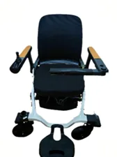
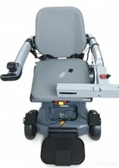
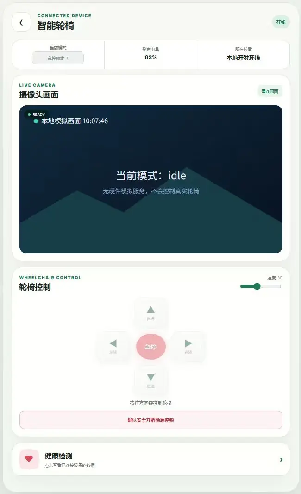
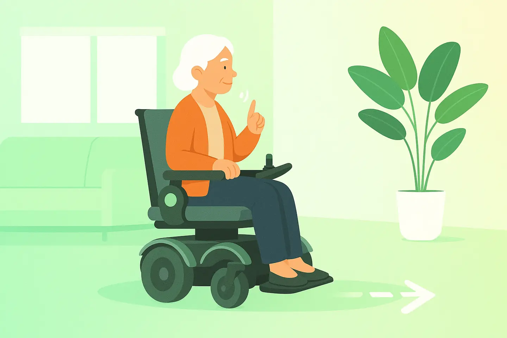
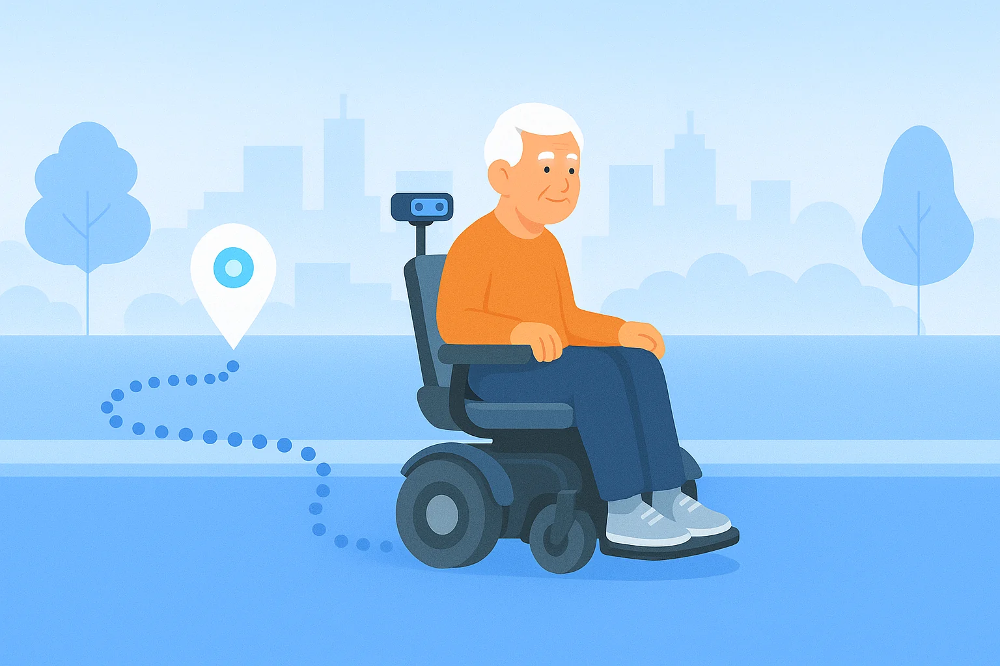
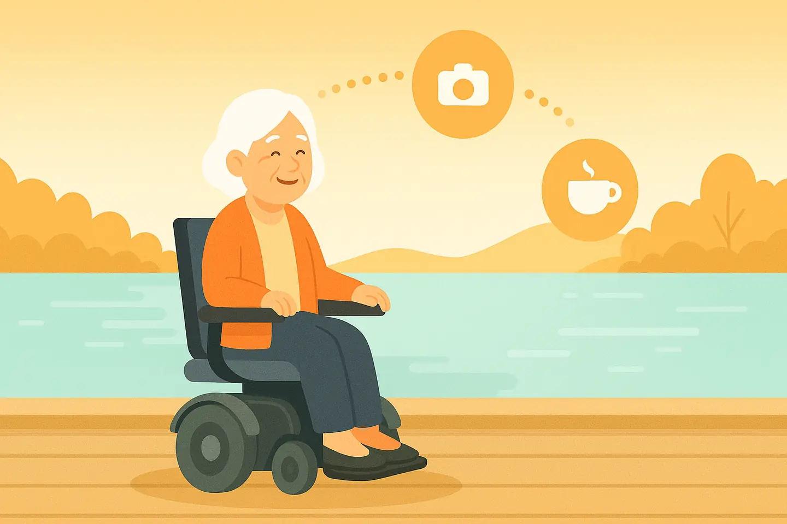
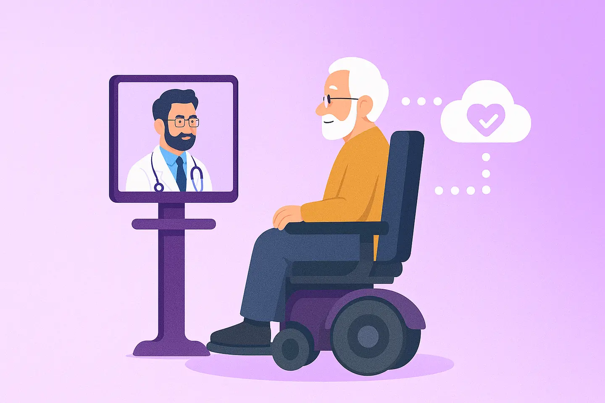
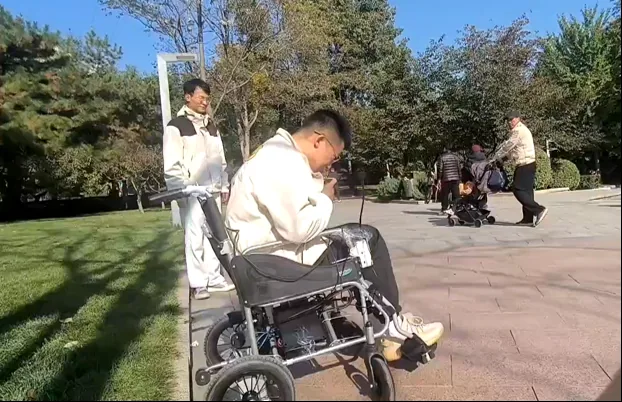

01
环境感知
融合视觉与传感器信息，理解轮椅周围的通行空间、障碍物与动态目标，为移动判断提供依据。
- 空间与障碍物感知
- 动态目标识别
从看清周围、规划路线，到表达目的地，让每一项技术都回到真实的出行需求。
融合视觉与传感器信息，理解轮椅周围的通行空间、障碍物与动态目标，为移动判断提供依据。
把定位、目的地与路径规划连接起来，围绕室内移动和社区路线，组织适合具体环境的导航方案。
让障碍信息参与移动控制，同时把急停和安全确认放在清晰的位置，便于在需要时及时干预。
通过语音、触控与手机界面表达运动指令、目的地和日常需求，让操作更贴近使用者的沟通习惯。
两张实拍图展示不同原型配置，便于了解座椅、扶手、控制器与底盘的整体布局。


在同一界面查看设备状态与摄像画面，找到方向控制、急停和健康数据入口，让操作与信息查看更集中。

漫游、室内、室外与综合四个方向，先比较活动范围，再确认感知、导航与交互配置。




| 版本 | 漫游版 Roam | 室内版 Home | 室外版 City | 综合版 Ultimate |
|---|---|---|---|---|
| 主要场景 | 居家与近距离活动 | 家居、办公与室内公共区域 | 社区、公园与户外路线 | 多场景综合应用 |
| 导航方向 | 漫游、跟随 | 室内定位与导航 | 多传感器户外定位 | 多模态感知与导航 |
| 交互方向 | 语音、触屏与指令 | 语音、触屏与指令 | 语音、触屏与智能辅助 | 语音、触屏与陪伴交互 |
通过室内跟随、转向与近距离移动片段，了解原型机在测试环境中的实际表现。
原型机在室内跟随人员并进行转向。
原型机在墙边进行短距离移动。

通行空间、路面条件、交互习惯与辅助需求，都会影响产品方案。我们建议先明确使用边界，再讨论功能组合与验证方式。
优先说明主要活动区域、通行空间与路面条件。不同环境需要不同的定位、感知与导航配置。
可以通过联系页的在线表单或业务邮箱，说明使用环境、功能需求与部署条件，再进一步讨论配置与后续安排。
从使用环境、功能需求和部署条件开始，梳理适合的产品方向。